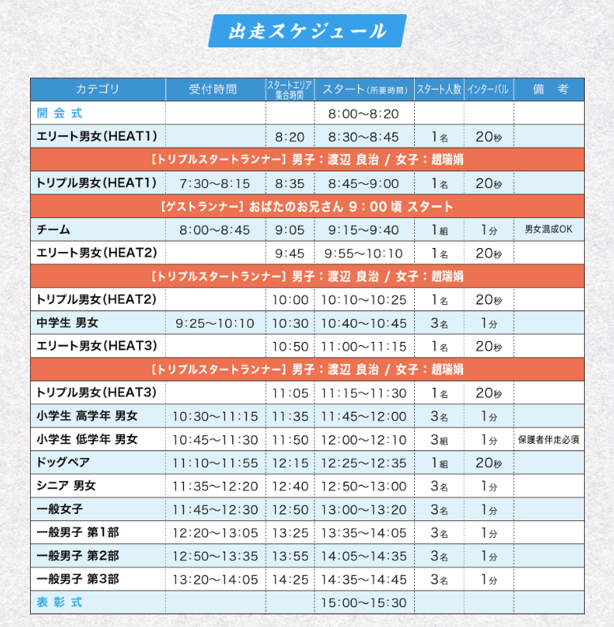

541名が挑む、日本最大級の石段競技へようこそ！
太郎坊チャレンジ2025は、スポーツ庁認定の地域活性化事業として、379段の石段を駆け上がる究極のチャレンジです。
この大会は「子供から大人まで本気で競い合える」特別な競技として注目を集めています。
リアルピースの皆様には、チーム戦最終組として9:40にスタートしていただき、全国から集まった参加者と共に太郎坊宮の石段に挑んでいただきます。
太郎坊・阿賀神社（太郎坊宮）は、約1400年前に創建された由緒ある神社です。
379段の石段は修験道の修行の場でもあり、一段一段に込められた歴史と想いを感じながら駆け上がっていただきます。
※お約束は1本の動画ですが、可能であれば以下の2本に分けていただけると嬉しいです。
撮影のサポートをさせていただきます。どの部分の撮影が必要か、事前に打ち合わせさせてください。
こちらで想定している撮影ポイント：
撮影した素材はすべてGoogleドライブで共有いたします。
| 時刻 | 内容 | 移動／備考 |
|---|---|---|
| 11:30 | 東京駅集合 | 17番線ホーム（12:00発に乗り遅れないようご注意ください） |
| 12:00–13:39 | 東京 → 名古屋 | のぞみ149号 |
| 13:43–14:10 | 名古屋 → 米原 | こだま719号 |
| 14:29–14:55 | 米原 → 近江八幡 | 琵琶湖線快速 |
| 15:00–15:30 | 近江八幡 → NIPPONIA五個荘 | ジャンボタクシー |
| 15:30–16:00 | NIPPONIAチェックイン | かずぅ様・こーた様・かちょー様 |
| 16:00–16:30 | NIPPONIA → 太郎坊宮 | ジャンボタクシー |
| 16:30–17:30 | 会場下見・ステージチェック | 太郎坊宮 |
| 17:30–17:45 | 太郎坊宮 → ほんまちホテル | ジャンボタクシー |
| 17:45–18:00 | ほんまちホテルチェックイン | なお様・こぺ様 |
| 18:00–18:10 | ほんまちホテル → すき焼 にしむら | ジャンボタクシー |
| 18:10–19:40 | 夕食 すき焼きの名店「すき焼 にしむら」 | 90分 |
| 19:40–19:50 | にしむら → ほんまちホテル | ジャンボタクシー |
| 19:50–20:10 | ほんまちホテル → NIPPONIA五個荘 | ジャンボタクシー |
| 20:40–21:10 | NIPPONIA → 八日市ロイヤル | タクシー |
重要な変更点：
確認事項：
| 時刻 | 内容 | 移動／備考 |
|---|---|---|
| 08:00 | 各ホテル発 | タクシー手配 |
| 08:30 | EXPOエリア ステージ横控室 集合 | |
| 09:00 | ステージ挨拶 | EXPOエリアステージ |
| 09:00–09:40 | スタート準備 | 準備が出来次第スタート地点へ移動 |
| 09:40 | チーム戦最終組として出走 | 太郎坊宮石段（5人同時スタート） |
| 10:00–10:30 | 参集殿内の控室で休憩 | 出走後の疲れを癒す |
| 10:30–10:55 | 本殿参拝（参加賞お守り受領） | 太郎坊宮の名所「夫婦岩」を通り抜け、本宮にお参り、絶景をお楽しみください |
| 10:55–11:00 | 参集殿駐車場 → EXPOエリア | 裏参道を通って、ゴール地点へ。そこからジャンボタクシーで、EXPOエリアへ |
| 11:10–11:25 | ステージ登壇（感想トーク） | |
| 11:30 | ステージ終了 → 撤収 | |
| 12:00–12:30 | 太郎坊宮 → 近江八幡駅 | ジャンボタクシー |
| 12:40–13:00 | 近江八幡 → 米原 | 新快速 |
| 13:10–15:40 | 米原 → 東京 | 新幹線（ひかり／のぞみ接続） |
| 16:00頃 | 東京駅到着・解散 |
太郎坊チャレンジ2025の全体タイムスケジュールです。リアルピースは9:40の「チーム」カテゴリーのラスト走者として出走していただきます。
更新日：2025年10月4日
実行委員会 今宿：080-3204-0317
公式サイト | Instagram | X (Twitter) | 公式LINE